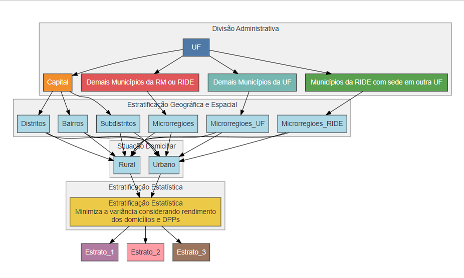
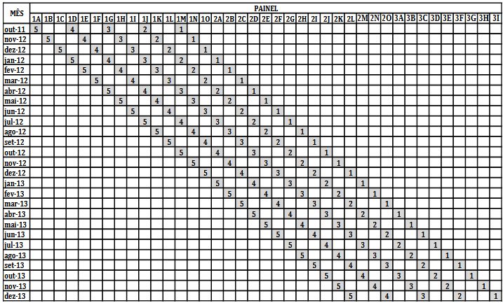

- Introdução
- Metodologia
- Aplicações
- Considerações finais
- Referências
Pesquisa Nacional por Amostra de Domicílios Contínua (PNADC)
Uma análise do plano amostral
Beatriz Silveira
Gabriel Augusto
Vitória Sesana
Gregório Lage
Universidade Federal do Espírito Santo
Slides disponíveis em GitHub
Tópicos
Introdução
Criação da PNAD
Criada em 1967 pelo IBGE.
O Publico alvo era os cidadãos residentes em domicílios.
Buscava informações a respeito da saúde, demografia, educação, indíces socioeconômicos e trabalho em todo o Brasil.
Introdução
Renovação para PNADC
Ocorre em 2012.
Mudança na periodicidade da pesquisa.
Lidava melhor com a sazonalidade e mudanças momentâneas nos domicílios.
Introdução
Diferenças entre PNAD e PNADC
PNAD desenvolvia índices anuais enquanto a PNADC desenvolve índices trimestrais.
Metodologia.
PNADC segue atualmente, focada em buscar informações sobre a força de trabalho brasileira.
Tecnologia
Introdução
Forma de seleção da amostra na PNADC
Setor Censitário.
Estratifição, Por Conglomerados e Amostragem Aleatória Simples.
Introdução
Conquistas da PNAD/PNADC
Estatuto da Criança e do Adolescente (ECA - 1990).
Programa Bolsa Familia (2003).
“Minha casa minha vida” (2009).
Artigos Científicos
Introdução
Conceitos da PNADc
Semana de entrevista;
Semana de referência;
Mês de referência;
Pessoas ocupadas;
Pessoas desocupadas;
Pessoas na força de trabalho;
Pessoas fora da força de trabalho.
Introdução
Variáveis da PNADc
A PNADc é divido em partes:
Parte 1: Identificação e Controle;
Parte 2: Características Gerais dos Moradores;
Parte 3: Características de educação para os moradores de 5 anos ou mais de idade;
Parte 4: Características de trabalho das pessoas de 14 anos ou mais de idade;
- Pessoas Ocupadas; - Pessoas não ocupadas;Variáveis Derivadas;
Pesos Replicados.
Introdução
É possível a análise conjunta entre PNAD e a PNADc?
Diferenças metodológicas;
Variáveis comparáveis;
Peso Amostral;
Períodos de Sobreposição.
Metodologia
O plano amostral
População alvo: Todas as pessoas moradoras de domicílios particulares permanentes.
Abrangência Geográfica: Todo o território nacional definidos pelas Base Operacional Geográfica de 2022, excluindo áreas especiais (quartéis, aldeias indígenas, etc.).
Definição
Unidades Primárias de Amostragem (UPA): Setores censitários com 60 ou mais domicílios. Setores menores são agrupados até atingir 60 domicílios.
Metodologia
O plano amostral
O planejamento amostral da PNADC é de conglomerado em dois estágios.
1º Estágio: As Unidades Primárias de Amostragem (UPAs) são selecionadas com probabilidade proporcional ao número de domicílios. As UPAs selecionadas compõem a amostra mestra, usada por um período de três meses.
2º Estágio: Dentro das UPAs selecionadas, 14 domicílios são sorteados por amostragem aleatória simples.
Metodologia
Estratificação
1. Divisão Administrativa
- Unidades da Federação (UFs).
- Regiões Metropolitanas (RM) e RIDEs.
- 5 Grupos:
- Capital
- Demais municípios das RM/RIDE
- Municípios de expansão metropolitana
- Municípios de RIDE com sede em outra UF
- Demais municípios da UF
2. Geográfica Espacial
- Separação por microrregiões, bairros e distritos.
- Foco em diferenças regionais.
3. Situação dos Domicílios
- Urbano vs. Rural.
4. Estatística
- Homogeneização por rendimento total e número de domicílios.
- Minimização da variância do estimador.
Metodologia
Estratificação
Figura 1: Diagrama de Estratificação.

Metodologia
Estratificação
A medida de distância associada a pares de UPAs utilizada no método de estratificação estatística é dada por:
\[ d(i, i') = N_i \cdot N_{i'} \left( \frac{Y_i}{N_i} - \frac{Y_{i'}}{N_{i'}} \right)^2 \]
Onde:
- \(N_i\) é o número de domicílios na UPA \(i\);
- \(N_{i'}\) é o número de domicílios na UPA \(i'\);
- \(Y_i\) é o total da característica de interesse \(y\) na UPA \(i\);
- \(Y_{i'}\) é o total da característica de interesse \(y\) na UPA \(i'\); e
- \(y\) é o rendimento total dos domicílios.
Metodologia
Esquema de Rotação 1-2(5)
- Funcionamento do Esquema 1-2(5):
- 1º Mês: Domicílio é entrevistado.
- 2º e 3º Meses: Domicílio fica fora da amostra.
- Ciclo Total: Repetido 5 vezes ao longo do tempo.
- Grupos de Rotação:
- As UPAs são divididas em 15 grupos de rotação.
- A cada mês, 5 grupos são entrevistados.
Metodologia
Esquema de rotação
Figura 2: Esquema de rotação 1-2(5).

Metodologia
Amostra mestra
Total de pessoas com a caracteristica de interesse:
\[ Y = \sum_{h=1}^{L} \sum_{i=1}^{M_h} \sum_{j=1}^{N_{hi}} Y_{hij} = \sum_{h=1}^{L} Y_h \]
Em que:
\(h\) é o índice do estrato a que pertence a UPA;
\(i\) é o índice da UPA dentro do estrato;
\(j\) é o índice do domicílio dentro da UPA;
\(L\) é o número total de estratos;
\(M_h\) é o número de UPAs na população do estrato \(h\);
\(N_{hi}\) é o número de domicílios na população da UPA \(i\) , do estrato \(h\);
\(Y_{hij}\) é o valor da variável \(y\) no domicílio \(j\) da UPA \(i\) , do estrato h ; e
\(Y_h\) é o total da variável \(y\) no estrato \(h\) .
Metodologia
Tamanho da amostra
Estimador do total de pessoas (Kish 1965):
\[ \hat{Y} = \sum_{h=1}^{L} \frac{1}{m_h} \sum_{i=1}^{m_h} \frac{\hat{Y}_{hi}}{p_{hi}} \] Variância do estimador:
\[ V\bigl(\hat{Y}\bigr) = \sum_{h=1}^L \frac{1}{m_h} \Bigg[ \sum_{i=1}^{M_h} \frac{Y^2_{hi}}{p_{hi}} - Y^2_h + \sum_{i=1}^{M_h} \frac{N^2_{hi}}{p_{hi}} \cdot \frac{S^2_{\mathrm{yhi}}}{n_{hi}} \cdot \frac{N_{hi} - n_{hi}}{N_{hi}} \Bigg] \]
Metodologia
Tamanho da amostra
Onde
\(L\) é o número total de estratos.
\(M_h\) é o número total de UPAs no estrato \(h\).
\(Y_h\) é o total da variável de interesse \(y\) no estrato \(h\).
\(S^2_{\mathrm{yhi}}\) é a variância da variável de interesse \(y\) na UPA \(i\) do estrato h.
\(n_{hi}\) é o número de domicílios na amostra da UPA \(i\) do estrato \(h\).
\(N_{hi}\) é o número de domicílios na população da UPA \(i\) do estrato \(h\).
\(p_{hi} = \frac{N_{hi}}{N_h}\) é o tamanho relativo da UPA \(i\) do estrato \(h\), que define a probabilidade de seleção desta UPA em um sorteio com PPT com reposição.
\(Y_{hi} = \sum_{j=1}^{N_h} y_{hij}\) é o total da variável \(y\) na UPA \(i\) do estrato \(h\).
Metodologia
Alocação do tamanho da amostra
Primeira Etapa:
Divisão em dois grupos:
Grupo 1: Capitais e regiões metropolitanas.
Grupo 2: Demais municípios.
Alocação proporcional ao número de UPAs em cada grupo.
Segunda Etapa:
Grupo 1 (Capitais e RM): Alocação proporcional ao número de domicílios e pessoas ocupadas.
Grupo 2 (Demais Municípios): Alocação proporcional ao número de UPAs.
Metodologia
Ajustes no Tamanho da Amostra
Ajuste de Tamanho Mínimo por Estrato: Garantir que cada estrato tenha pelo menos 15 UPAs (devido ao esquema de rotação 1-2(5)).
Ajuste para Homogeneidade da Carga de Trabalho: Tamanho da amostra em cada estrato é múltiplo de 12, para distribuir a coleta de dados ao longo de 12 semanas.
Ajuste de Precisão para Capitais: Garantir que o Coeficiente de Variação (CV) para o total de pessoas desocupadas seja menor que 15%.
Metodologia
Seleção das unidades primárias de amostragem
- Amostragem de Pareto PPT (ver Costa, 2007)
\[ Q_{i} = \frac{ALEAT - ALEAT*p}{p - ALEAT*p}\] Onde:
\(ALEAT\) é o número aleatório entre 0 e 1;
\(p = \frac{DPPO_{i}}{\sum_{i \in GRUPO DPPO_{i}}}\) é a proporção de domicílios da UPA i dentro do grupo de rotação.
As UPAs são, então, ordenadas de forma crescente segundo a quantidade \(Q_{i}\), e são selecionadas para a amostra as primeiras de cada grupo, de acordo com os tamanhos previamente calculados.
Metodologia
Seleção dos domicílios
Após a atualização de cadastros dos domicilios realizados pelo Cadastro Nacional de Endereços para Fins Estatísticos (CNEFE), realizado trimestralmente. Ocorre a seleção dos domicilios que irão contribuir para a PNADC por meio de Amostragem Aleatória Simples, considerando apenas os domicilios particulares permanentes ocupados cadastrados no CNEFE.
Metodologia
Cálculo dos pesos: UPAs
O peso básico para estimar características que serão produzidas a cada trimestre é dado por:
\[w_{gi} = \frac{1}{m_g} \times \frac{N_g}{N_{gi}}\]
\(m_{g}\) é o número de UPAs selecionadas no grupo de rotação \(g\);
\(N_{gi}\) é o número de domicílios particulares permanentes ocupados, ocupados sem entrevistas realizadas e vagos na UPA \(i\) do grupo de rotação \(g\), dados do Censo 2010;
\(N_{g}\) é o número de domicílios particulares permanentes ocupados, ocupados sem entrevistas realizadas e vagos no grupo de rotação \(g\).
Metodologia
Cálculo dos pesos: UPAs
Para as estimativas calculadas apenas uma vez por ano, com acumulação das amostras trimestrais não sobrepostas de UPAs, o cálculo dos pesos leva em conta a utilização de apenas 80% da amostra. Com isso os pesos das UPAs são corrigidos para compensar a parte da amostra que não entra na estimação da seguinte maneira:
\[ w_{hi}^{ano} = \frac{1}{m_g} \times \frac{N_g}{N_{gi}} \times \frac{\sum_{\substack{i \in h}} w_{gi}}{\sum_{\substack{i \in h \\ i \in ano}} w_{gi}} \]
Onde:
- \(\sum_{i \in h} w_{gi}\) é o total dos pesos das UPAs do estrato \(h\);
- E este é o total dos pesos das UPAs do estrato \(h\) com domicílios em uma determinada entrevista no ano de interesse: \[ \sum_{\substack{i \in h \\ i \in ano}} w_{gi} \]
Metodologia
Cálculo dos pesos: domicílios
O cálculo dos pesos dos domicílios e de todos os seus moradores é feito em três etapas: peso básico, peso com ajuste por não resposta e peso com ajuste por calibração.
1. Peso básico;
2. Peso com ajuste por não resposta;
3. Peso ajustado por calibração.
Metodologia
Cálculo dos pesos: domicílios - peso básico
O peso básico do domicílio é obtido pela expressão:
\[ w_{gij} = w_{gi} \times w_{j|gi} = \frac{1}{m_g} \times \frac{N_g}{N_{gi}} \times \frac{N'_{gi}}{n_{gi}} \]
Onde:
\(N'_{gi}\) é o número de domicílios particulares permanentes ocupados e fechados na UPA \(i\) do grupo de rotação \(g\), dados da última atualização do CNEFE;
\(n_{gi}\) é o número de domicílios selecionados na UPA \(i\) do grupo de rotação \(g\).
E os domicílios são selecionados com probabilidade igual em cada UPA, assim o peso dos domicílios dentro da UPA é dado por:
\[ w_{j|gi} = \frac{N'_{gi}}{n_{gi}} \]
Metodologia
Cálculo dos pesos: domicílios - peso com ajuste por não resposta
Após a determinação do peso básico, ele é ajustado para compensar as perdas de entrevistas por não resposta, ou seja, entrevistas não realizadas por recusa do informante, por não contato com o morador ou por outro motivo para perda em domicílios ocupados.
A fórmula utilizada é:
\[ w_{gij}^* = \frac{1}{m_g} \times \frac{N_g}{N_{gi}} \times \frac{N_{gi}^*}{n_{gi}} \times \frac{n_{gi}^*}{n'_{gi}} \]
Onde:
- \(n_{gi}^*\) é o número de domicílios selecionados com morador na UPA \(i\) do grupo de rotação \(g\);
- \(n'_{gi}\) é o número de domicílios selecionados com entrevista realizada na UPA \(i\) do grupo de rotação \(g\).
Metodologia
Cálculo dos pesos: domicílios - peso ajustado por calibração
Consiste em ajustar os pesos e estimativas baseado em alguma fonte de informação de confiança, no caso da PNADC é utilizado como calibração as estimativas populacionais produzidas pela Coordenação de População e Indicadores Sociais (COPIS).
Os pesos para estimação trimestral são calibrados para a população do dia 15 do mês do meio do trimestre, e são dados por
\[ w_{gij'} = \frac{1}{m_g} \cdot \frac{N_g}{N_{gi}} \cdot \frac{N_{gi}^*}{n_{gi}} \cdot \frac{n_{gi}^*}{n'_{gi}} \cdot \frac{P_{a}^{tri}}{\hat{P}_{a}^{tri}} \]
onde:
- \(P_{a}^{tri}\) é a estimativa populacional produzida pela COPIS para o nível geográfico \(a\) para o dia 15 do mês do meio do trimestre;
- \(\hat{P}_{a}^{tri}\) é a estimativa populacional obtida com os dados da pesquisa para o nível geográfico \(a\) no trimestre.
Metodologia
Cálculo dos pesos: domicílios - peso ajustado por calibração
Ainda está sendo definido para qual dia do ano os pesos para estimação anual serão calibrados. A expressão a ser utilizada será
\[ w_{hij}^{ano} = w_{hi}^{ano} \cdot \frac{N_{gi}^*}{n_{gi}} \cdot \frac{n_{gi}^*}{n'_{gi}} \cdot \frac{P_{a}^{ano}}{\hat{P}_{a}^{ano}} \]
Onde:
- \(P_{a}^{ano}\) é a estimativa populacional produzida pela COPIS para o nível geográfico \(a\) para o dia do ano a ser definido;
- \(\hat{P}_{a}^{ano}\) é a estimativa populacional obtida com os dados da pesquisa para o nível geográfico \(A\) no ano.
Metodologia
Outros estimadores relevantes
Outros estimadores relevantes para a PNADC são os estimadores de total da característica de interesse ou razões entre totais de duas características, alguns dos mais relevantes são:
Totais para um trimestre:
\[ \hat{Y}_{r}^{tri} = \sum_{g} \sum_{i} \sum_{j} \sum_{k} W'_{gij} y_{gijk} = \sum_{a} \sum_{g} \sum_{i} \sum_{j} \sum_{k} W_{gij}^* y_{gijk} \times \frac{P_a^{tri}}{\hat{P}_a^{tri}} = \]
\[ = \sum_{a} \hat{Y}_{a}^{tri} \times \frac{P_a^{tri}}{\hat{P}_a^{tri}} = \sum_{a} \frac{\hat{Y}_{a}^{tri}}{\hat{P}_a^{tri}} \times P_a^{tri} \]
onde
- \(y_{gijk}\) é o valor da variável de interesse \(y\) para a pessoa \(k\) do domicílio \(j\) da UPA \(i\) do grupo de rotação \(g\);
- \(\hat{Y}_{a}^{tri}\) é o estimador natural do total da variável de interesse \(y\) no nível geográfico \(a\).
Aplicações
- Periodicidade Mensal
- Periodicidade Trimestral
- Periodicidade Anual
- Periodicidade Variável
Aplicações
Periodicidade Trimestral
- Ocupação de trabalho
- Desemprego
- Rendimento
Periodicidade Trimestral

Periodicidade Trimestral

Periodicidade Mensal

Aplicações
Periodicidade Anual
- Trabalho infantil
- Outras formas de trabalho (produção para o próprio consumo, trabalho voluntário, cuidados com familiares e afazeres domésticos)
- Características da habitação e bens duráveis
- Rendimento de outras fontes
Periodicidade Anual

Considerações finais
Este artigo teve como objetivo analisar a PNADC, uma das pesquisas amostrais mais influentes no Brasil. Como uma pesquisa probabilistica de plano amostral complexo, sua análise permitiu comentar diversos mátodos teóricos de estratificação, planejamento amostral e cálculo amostral. Alám de pontuar a importancia politica e histórica das estimativas desenvolvidas, que permitiram embasso ciêntifico para formento de leis e para estatísticas amplamente divulgadas por veiculos de comunicação.
Referências
COCHRAN, W. G. Sampling Techniques. 3. ed. New York: John Wiley, 1977.
COSTA, G. T. L. Coordenação de amostras PPT em Pesquisas Repetidas, utilizando o método de amostragem de Pareto. 2007. Dissertação (Mestrado) – Escola Nacional de Ciências Estatísticas, Rio de Janeiro, 2007.
INSTITUTO BRASILEIRO DE GEOGRAFIA E ESTATÍSTICA (IBGE). Pesquisa Nacional por Amostra de Domicílios Contínua. 2023. Disponível em: https://www.ibge.gov.br/estatisticas/sociais/trabalho/9171-pesquisa-nacional-por-amostra-de-domicilios-continua-mensal.html?=\(\&\)t=o-que-e. Acesso em: 23 fev. 2025.
INSTITUTO BRASILEIRO DE GEOGRAFIA E ESTATÍSTICA (IBGE). Pesquisa Nacional por Amostra de Domicílios Contínua: Notas Metodológicas. Rio de Janeiro: IBGE, 2014. Disponível em: https://ftp.ibge.gov.br/Trabalho_e_Rendimento/Pesquisa_Nacional_por_Amostra_de_Domicilios_continua/Notas_metodologicas/notas_metodologicas.pdf. Acesso em: 10 mar. 2025.
INSTITUTO BRASILEIRO DE GEOGRAFIA E ESTATÍSTICA (IBGE). Pesquisa Nacional por Amostra de Domicílios: Conceitos e Métodos. Disponível em: https://www.ibge.gov.br/estatisticas/sociais/populacao/9127-pesquisa-nacional-por-amostra-de-domicilios.html?=\(\&\)t=conceitos-e-metodos. Acesso em: 7 mar. 2025.
Obrigada pela atenção!